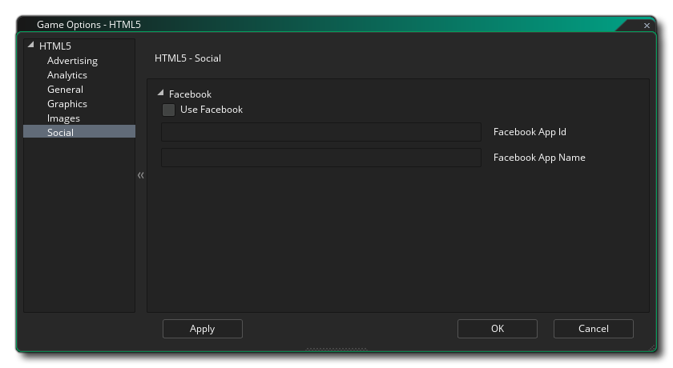

In diesem Abschnitt werden die verschiedenen verfügbaren Optionen beschrieben, die steuern, wie Ihre HTML5-Spielprojekte kompiliert werden. Die verschiedenen Abschnitte sind:
In diesem Abschnitt haben Sie einige allgemeine Optionen oben:
- Output Debug To Console: Dies sendet alle Debug-Ausgaben an die JS-Konsole Ihres Browsers. Dies ist standardmäßig deaktiviert.
- Anzeige-Cursor: Dies wird den Mauszeiger deaktivieren, wenn er sich über der Spielfläche befindet. Dies ist standardmäßig aktiviert.
- Anzeige "Running Outside Server" Alert: Wenn Sie ein Spiel lokal testen (zB: Klicken Sie auf die Indexdatei von Ihrem Computer anstatt von einem Server - nicht empfohlen), erhalten Sie normalerweise eine Warnung, die Sie darüber informiert, dass die Dinge nicht funktionieren Sie können aufgrund der Browsersicherheit für lokale Dateien erwarten. Sie können diese Warnung unterdrücken, indem Sie diese Option deaktivieren. Es ist standardmäßig aktiviert.
Unter den allgemeinen Einstellungen haben Sie die erweiterten Optionen, die sind:
- Enthaltene Datei als index.html: Dies ist zum Hinzufügen einer benutzerdefinierten Datei "index.html", die anstelle der vordefinierten Datei verwendet wird, die GameMaker Studio 2 standardmäßig generiert. Dies kann sehr nützlich sein, wenn Sie ein Website-Design implementiert haben oder bestimmte Funktionen in alle Ihre HTML5-Builds aufnehmen möchten. Die zu verwendende Datei muss im Spielprojekt als Eingeschlossene Datei enthalten sein.
- Bar - Extension laden: Dies wird die Standardladebalken für eine Änderung, die zu Ihrem hinzugefügt wurde GameMaker Studio 2 Projekt als Erweiterung (es gibt eine Demo dieses zur Verfügung von der Startseite ).
- Ausgabe vorgeben.js: Hier können Sie die *.js Ausgabe mit zusätzlichem JavaScript, das für dein Spiel erforderlich ist. In einer Chrome Store-App müssen Sie möglicherweise beispielsweise hinzufügen window.localStorage = undefined; zu der Ausgabe JS, für die Sie diese Option verwenden würden.
- Titel für Browser: Hier können Sie im Browser den Text angeben, der für die Titelleiste des Tabs für Ihr Spiel verwendet werden soll.
- Version: Die Versionsnummer für Ihr Projekt.
- Name des Ordners: Der Name des Ordners, in dem Ihre HTML5-Spieldateien gespeichert werden (Standard ist "html5game").
- Ausgabename: Dies ist der Name der HTML-Ausgabedatei und kann zu einem anderen als dem Standard "index.html" geändert werden.
In diesem Abschnitt können Sie Analysen zu Ihrem Spiel hinzufügen, sodass Sie bestimmte Produkte von Drittanbietern verwenden können, um Ihr Spiel und seine Verkäufe oder Spiele zu verfolgen. Sie können angeben, ob Sie Flurry Analytics oder Google Analytics zum Verfolgen Ihres Spiels verwenden möchten. Aufgrund der Art dieser Funktionen können Sie jeweils nur jeweils eine Aktivität aktiv haben. Sobald Sie die Aktivierung von Flurry Analytics oder Google Analytics aktiviert haben, sollten Sie auch die eindeutige ID hinzufügen, die Sie im entsprechenden Bereich zugewiesen haben.
Weitere allgemeine Informationen zu Analysen finden Sie in der YoYo Knowledge Base. Informationen zu den Funktionen zum Senden von Analysedaten finden Sie hier.
Hier können Sie die folgenden Details zur Anzeige Ihres Spiels ändern (beachten Sie, dass nicht alle Browser Ihr Spiel auf die gleiche Weise anzeigen, testen Sie diese Optionen also in so vielen Browsern wie möglich, um sicherzustellen, dass sie den gewünschten Effekt haben):
- Wechsel zum Vollbildmodus erlauben: Wenn Sie dies aktivieren, können Sie das Spiel vom Fenster- in den Vollbildmodus umschalten, indem Sie <STRG> + <CMD> + <F> auf dem Mac und F10 unter Windows verwenden. Dies ist standardmäßig aktiviert.
- Interpolieren von Farben zwischen Pixeln: Schaltet die Interpolation ein, die Pixel im Grunde "glättet". Für knackige Pixelgrafiken sollte es ausgeschaltet sein, aber wenn Sie nette Alpha-Mischungen und geglättete Kantengrafiken haben, ist es besser, auf sie zu bleiben. Standard ist deaktiviert.
- Zentrieren Sie das Spiel im Browser: Wenn Sie diese Option aktivieren, zentriert sich der Spielbildschirm automatisch innerhalb des Browsers, in dem das Spiel ausgeführt wird.
- Gebaute Partikel verwenden Diese Option exportiert die für das eingebaute Partikelsystem erforderlichen Sprites zusammen mit Ihrem Spiel. Diese Sprites werden in einzelnen Texturseiten gespeichert, was bedeutet, dass sie nicht die effizienteste Methode zum Erzeugen von Partikeln für diese Plattform sind. Daher wird empfohlen, diese Option zu deaktivieren (und keine WebGL zu verwenden) und eigene Partikelsprites zu verwenden gespeichert auf den Haupttexturseiten alle zusammen für dein Spiel.
- WebGL: Wählen Sie, ob Sie die WebGL-Unterstützung ausschalten, optional (automatisch erkennen) oder als Voraussetzung für Ihr Spiel festlegen möchten. Es sollte beachtet werden, dass Sie diese Funktion unter "Deaktiviert" aktivieren sollten, wenn Sie die Leistung unter allen Umständen testen möchten, und legen Sie sie normalerweise so fest, dass sie für die Veröffentlichung automatisch erkannt wird. Wenn Sie dies als Voraussetzung festlegen, kann sich die Kompatibilität Ihres Spiels mit verschiedenen Browsertypen erheblich verringern.
- Skalierung: Ihr Spiel kann so konfiguriert werden, dass der Zeichenbereich automatisch skaliert wird, um das Seitenverhältnis im Browser beizubehalten, oder Sie können auswählen, dass der Bereich gestreckt werden soll. Die Stretch-to-Fit-Option wird das Spiel im Browser nicht im Vollbildmodus anzeigen, sondern das, was gezeichnet wird, an die Leinwandgröße anpassen, wie sie im ersten Raum des Spiels definiert ist.
Schließlich gibt es noch die Möglichkeit, die Größe der Textur-Seite festzulegen. Die Standardgröße (und die meist kompatible) ist 2048x2048, aber Sie können zwischen 256x256 und 8192x8192 wählen. Es gibt auch eine Schaltfläche mit der Bezeichnung Vorschau, die die Strukturseiten für diese Plattform erzeugt und dann ein Fenster öffnet, damit Sie sehen können, wie sie aussehen. Dies kann sehr nützlich sein, wenn Sie sehen möchten, wie die Strukturseiten strukturiert sind und um zu verhindern, dass Strukturseiten größer (oder kleiner) als nötig sind.
HINWEIS: Beachten Sie, je größer die Texturseite ist, desto weniger kompatibel wird Ihr Spiel sein.
In diesem Bereich können Sie das Favicon und den Begrüßungsbildschirm definieren. Das Symbol sollte als erstellt werden *.ico Datei und kann 16x16, 32x32, 48x48 oder 64x64 Pixel in der Größe und 8-Bit, 24-Bit oder 32-Bit in der Farbtiefe sein. Der Begrüßungsbildschirm sollte der Größe des Canvas entsprechen, das Ihr Spiel enthält, und wird alle Ladebalken außer Kraft setzen, wenn Sie die Option Startbildschirm verwenden aktivieren (dh Sie können eine Ladeleiste oder einen Begrüßungsbildschirm haben, aber nicht beide).. Kleinere oder größere Bilder sind erlaubt, werden aber skaliert.
Es ist erwähnenswert, dass GameMaker Studio 2 ein Project Image Generator- Tool enthält, mit dem automatisch alle Bilder erstellt werden können, die für die verschiedenen Zielplattformen benötigt werden, auf denen das Spiel kompiliert wird. Wenn Sie dieses Tool verwenden, sollten Sie die erstellten Bilder überarbeiten, um sicherzustellen, dass sie Ihren Anforderungen entsprechen.

Der soziale Tab wird für die Einrichtung der Facebook-Kommunikation in Ihrem Spiel verwendet. Wenn Sie die Facebook-Funktionen benötigen, müssen Sie auf das Kontrollkästchen "Facebook verwenden" klicken und dann die Facebook-App-ID und den Facebook-App-Anzeigenamen angeben. Bitte beachten Sie, dass alle Funktionen von Facebook über eine Erweiterung zugänglich sind. Wenn Sie das Facebook-Feld verwenden, werden Sie aufgefordert, die Facebook-Erweiterung vom Marktplatz herunterzuladen und zu installieren (möglicherweise müssen Sie sich erst in Ihr YoYo Konto einloggen)..